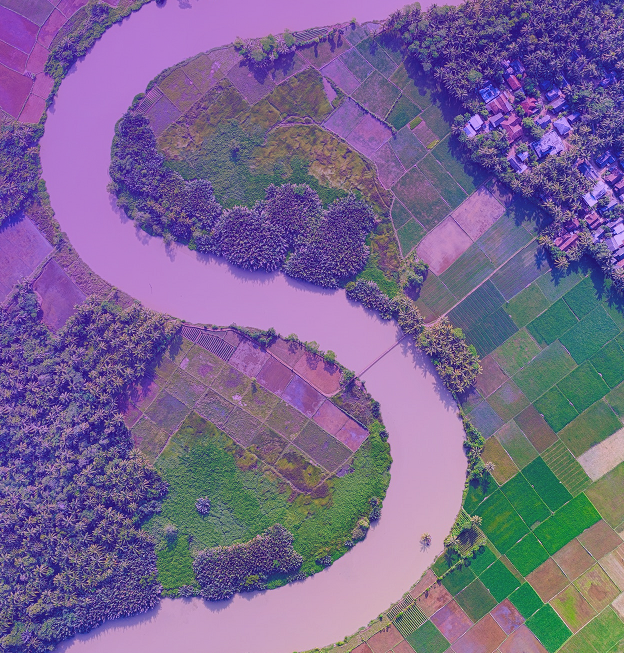
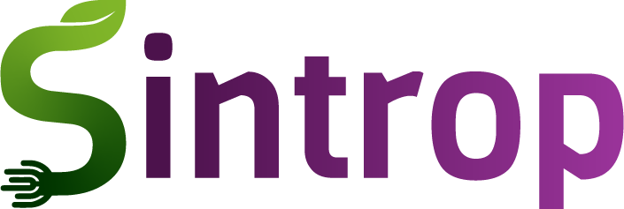

Startup social, queremos tornar o mundo um lugar sustentável onde seres vivos e natureza possam viver em harmonia. Nosso projeto consiste em uma certificação descentralizada de produtores rurais, com sistema de recompensas de tokens de sustentabilidade, usando tecnologia blockchain e a plataforma Ethereum.


Seja bem-vindo
Nossa missão é tornar a agricultura sustentável no mundo através da tecnologia.
Clique no botão acima para sincronizar sua carteira Metamask.